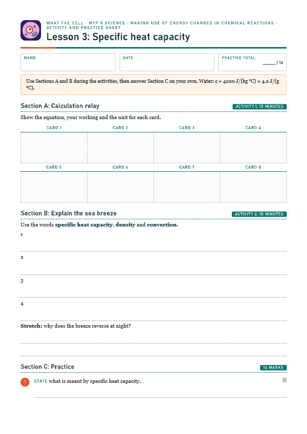

By the end of the lesson you can
- State what specific heat capacity means
- Use Q = mcΔT to calculate energy, mass or temperature change
- Explain why water heats and cools slowly
- Apply specific heat capacity to land, sea and cooking
Keys: arrows or a presentation clicker move the slides, F for full screen. Slides with a red dot have a video or simulation.
Videos (all 5 minutes or less)
- 3:13
Specific heat capacity
FuseSchool. What specific heat capacity means and how to use Q = mcΔT. Slide 10.
Simulations
- Lab
Energy Changes Lab: specific heat capacity
What the Cell. Give the same energy to water, oil and metals and compare the temperature rise; check your Q = mcΔT answers.
- PhET
Energy Forms and Changes
PhET, University of Colorado Boulder. Heat water and olive oil on the same burners and see which warms faster.
Print and practise

Activity and practice sheet
Used in the lesson’s activities, with practice questions. Your teacher has the answers.
Download (PDF)Lesson 3 slides
All 23 slides in one file, to read again or print. The video buttons on the slides open YouTube.
Download the slides (PDF)Revising? The Revision tab on the unit page has the unit notes and review.
Class activity pack
Everything to print for the lesson’s activities: picture cards, sorting mats, station cards with their kit lists, and the teacher’s set-up notes. Print it before class.
Download the activity pack (PDF)Notes: Specific heat capacity
What it means
Specific heat capacity (c) is the energy needed to raise the temperature of 1 kg of a substance by 1 °C. Its unit is J/(kg °C). Water: 4200; cooking oil: 2000; aluminium: 900; sand: 800; copper: 390.
The equation
Q = m × c × ΔT, where Q is energy (J), m is mass (kg), c is specific heat capacity and ΔT is the temperature change (final minus starting temperature). Use grams with J/(g °C): 4200 J/(kg °C) = 4.2 J/(g °C).
Rearranging
m = Q / (cΔT); ΔT = Q / (mc); c = Q / (mΔT). Write the equation first, then substitute, then give the unit.
Water is special
Water has one of the highest specific heat capacities of any common substance, so it warms and cools slowly. Coastal places have milder weather, and water makes a good coolant and hot-water bottle filling.
The sea breeze
On a sunny day the sand warms more than the sea. Air over the land is heated, becomes less dense and rises; cooler air from over the sea flows in. At night the land cools faster and the breeze reverses.
High c, slow change
A substance with a high c needs a lot of energy for each degree, so it heats up slowly. Oil heats about twice as fast as the same mass of water on the same hot plate.
Key words
| specific heat capacity (c) | energy needed to raise 1 kg of a substance by 1 °C, in J/(kg °C) |
|---|---|
| Q = mcΔT | energy (J) = mass × specific heat capacity × temperature change |
| ΔT | change in temperature: final minus starting |
| joule (J) | the unit of energy; 1 kJ = 1000 J |
| coolant | a fluid that carries heat away, often water |
| sea breeze | wind from sea to land on a sunny day, caused by convection |